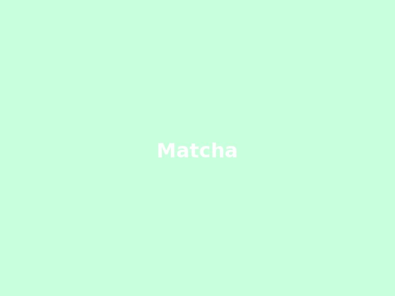
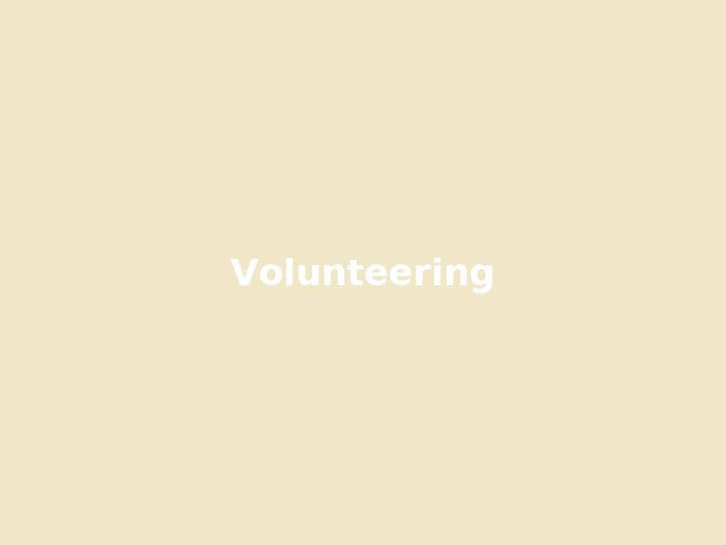

Application Part II — Presented scrapbook-style with notebook tabs
Applicant Information:
Applicant Information:
Preferred Full Name: Isha Jannu
Pronouns: she/her/hers
Current UT Address: 2011 San Antonio Street APT 1817 Austin, TX 78705
Phone Number: 2145856729
Email Address: ishajannu@utexas.edu
UT eid: isj283
Academic Records:
Cumulative GPA: *If you are a transfer student, list your most recent school’s GPA.* 3.23
Year: Sophomore
Major: Computer Science
UT Coursework Highlights (add image)

Study vibes / matcha (add picture)
Short Answer Questions:
Short Answer Questions:
You may be as creative as you would like in your response to these questions. We encourage you to be your authentic self and that could involve pictures, memes, etc.
Show off your personality! Please make sure your fonts are easily readable.
Required. Limit your responses to 250 words or less.
Why do you want to join Texas Bluebonnets? We are not looking for one particular response, be true to yourself!
As a sophomore, I want to meet people outside my major that value the same things as me, and I think the pillars in CLASS fulfill that perfectly. This was the one place, at your info sessions, that I felt was genuine, because I'm an introvert and you all truly made me feel comfy being myself. Beyond my roomies, I would love to find a group of cuties who I can call family to do cutie activities with! <3
Pick one of our core pillars (character, leadership, academics, service, and spirit) and explain how you embody and value this pillar.
I'm really passionate about youth literacy after volunteer tutoring for years and I’m grateful to have grown up with an emphasis on the value of education. Realizing that illiteracy is a widespread epidemic made me want to advocate for it, by speaking at a TEDxYouth event and how technology can help us solve it together. Similarly, I also have spent many hours at the North Texas Food bank with my family and have continued that path of aiding food insecurity here at UT, through an org called ATX Food Hub. As the map improvement lead, we were able to provide a centralized hub to consolidate discounted/free food resources for students and Austinites– that’s why I’m especially excited if I continued that journey with Bluebonnets with Sunday Lunchbox. Additionally, I’m currently part of Project Advance Austin's working with the Dress for Success nonprofit for helping women achieve their professional dreams. I'm majoring in computer science simply because I want to develop tech to improve the everyday lives of people and that's honestly my life goal.

Volunteering / Food bank (add picture)
Pick 2 Questions
Pick 2 questions of those listed to answer. Limit each of your responses to 200 words or less.
What do you value most in a friendship?
What do you think people sometimes get wrong about you?
What are you most passionate about in your life right now? I’m passionate about living life to the fullest before I’m stuck in a corporate job (the 9-5 is overrated 🤨). Along those lines, I’m trying to find my personal brand and make time to find joy in the small things even with a busy schedule. For instance, I designed my room in my apartment (my first one 🥹) with a sage green theme, leaf fairy lights, and wooden/gold accents. I personally painted my decor on canvas and reconnecting with my creative side made me really happy– we get too caught up in life sometimes to make time for relaxing hobbies.
If you could write a book on any topic, what would it be?
My lifelong dream has been to write a book– I’m a HUGE fiction reader, especially fantasy, dystopia, sci-fi, and romance. Later in life, I would love to move to some remote town in Europe (Italy is a strong contender?? 😁) and write my novel in some small cottage and maybe do my tech job remotely. I would write an awesome sci-fi romance, the next Hunger Games or Fourth Wing– I’m always open to good book recs– and I live for a good plot. I’d probably write a romance set in space with some astronauts– I especially love Ali Hazelwood’s style of bridging romance and women in STEM for nerds like me 😋so I would probably implement something similar.
Books / writing (add picture)
Fun Questions
Required. Answer all of the following questions. Limit your responses to 1-3 sentences each.
What is your favorite thing about yourself? Spontaneity– because it enables me to make time for the people I care about, and makes the small things feel super special. For example, when my high school friend visited UT for the first time last semester, I turned Top Golf and Taco Bell into her first nightly college adventure, and I’m incredibly grateful that she will always take that memory with her.
If you could travel anywhere right now, where would you go? I would go to a remote beach. There’s something so calming about the ocean– it reminds me of my childhood in Jersey. Plus, I will never say no to a swim #ilovebartonsprings
What’s the best piece of advice you’ve ever received? YOLO because I've always aspired to live my life that way. Whenever I’m debating spending money or time on some experience, my roommate always tells me you only live once. Because money comes back but experiences don’t– I find that mindset so endearing especially when it’s so unreasonable 😅. I define my life by being spontaneous (shoutout to my roomies who introduced me to the idea of study dates/cafe hopping on a random Tuesday). And I think regardless of the additional work or time commitment or cost, nothing replicates the memories and happiness you’ll get from quality time.
What kind of music do you listen to when you’re in a great mood? Throwback :)) I love old Taylor Swift, Ed Sheeran, etc– basically songs to scream in the shower. I’ve been really into indie artists recently and I also love Bollywood music <3.
If you had 1000 dollars, what would you spend it on? Food, obviously heheh– but more realistically, people. My love language is gift giving and one of my favorite gifts ever was my first pair of crocs (pink!) for my 18th birthday because my friend knew I’ve never worn them before– thoughtfulness is what drives all my friendships. Just yesterday we bought my roommate a gift basket because she was overwhelmed with org work :( Overall, I love putting a smile on my friends’ faces.
If all animals were the same size, what would win in a fight? A mouse because did Tom ever really catch up to Jerry?? Plus they're too cute to eat. Everyone would take pity on them.
If you could time travel to the Victorian Era, what modern item would you show them? Hear me out– a vibrator in the Victorian Era would be novel. It’s this tiny gadget that basically says, ‘Women don’t need a man to get stuff done.’ Super compact, totally efficient, and honestly kind of empowering…
What would be your “death row meal?” Hard to choose– pasta because who doesn’t love a good creamy fettuccine? And of course, my mom’s chicken biriyani because I LOVE spice, and chocolate cake because I NEVER forget dessert 😋
Fill in the blank: I am “most likely to……” accidentally throw my phone in the trash can or dryer (true stories) or something else horrendously stupid 😅
What is your favorite emoji? 😚😋because I use the second one to express my happiness, and the first to express my gratitude or love.
Optional Question:
Is there anything else you would like to tell us about yourself that you have not already covered?
Thank you for giving me the chance to express myself <3 I’ve never used my technical skills in a way that’s solely for this purpose so you have my gratitude.
Signed Statement:
By signing and submitting this statement, you agree that the information provided to Texas Bluebonnets on your entire application is accurate and true to the best of your knowledge.
Isha Jannu
Signature